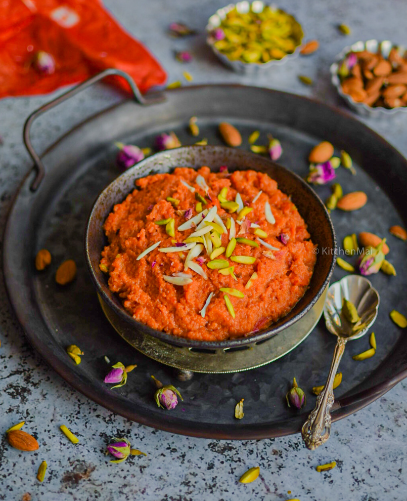

indian style cooking
Give you the littel tour of india
Are you ready
Chicken Curry (Indian style)
Explore the vibrant and diverse world of Indian cuisine through our website, where you'll discover a rich tapestry of flavors and culinary delights. Menu 1 invites you to embark on a tantalizing journey through an array of aromatic curries, each bursting with spices and textures that will transport you to the heart of India. Meanwhile, Menu 2 offers a delectable selection of my personal favorite desserts, ranging from traditional treats to innovative delights that are sure to satisfy your sweet cravings. Join us as we celebrate the essence of Indian cooking and indulge in a feast for the senses like no other.
MENU 1

Chicken curry is a flavorful and aromatic dish that is popular in many cuisines around the world, particularly in South Asian and Southeast Asian countries. It typically consists of chicken pieces cooked in a rich and spicy sauce made with a variety of herbs, spices, and other ingredients. The exact recipe for chicken curry can vary widely depending on regional preferences and personal tastes, but some common ingredients include onions, garlic, ginger, tomatoes, and a blend of spices such as cumin, coriander, turmeric, and chili powder. Other ingredients like coconut milk, yogurt, or cream may also be used to add richness and creaminess to the sauce. To make chicken curry, the chicken pieces are usually first marinated in a mixture of spices and yogurt or lemon juice to tenderize and flavor the meat. Then, they are browned in oil or ghee along with onions, garlic, and ginger until golden and fragrant. Tomatoes and other vegetables may be added and cooked until soft before the spices are added to create the curry base. The chicken is then simmered in the sauce until cooked through and tender, allowing the flavors to meld together and develop. The final dish is often garnished with fresh cilantro or chopped coriander leaves and served with rice, naan bread, or roti for a satisfying and comforting meal. Chicken curry is known for its bold flavors, warming spices, and versatility, making it a favorite dish for many people around the world.
MENU 2
(carrot puding)
"Gajjar ka Halwa" is a traditional Indian dessert made from grated carrots, milk, sugar, and ghee (clarified butter). It is popular across the Indian subcontinent, especially during festivals and special occasions. To prepare Gajjar ka Halwa, grated carrots are cooked in ghee until they become soft and tender. Then, milk is added and simmered until it reduces and thickens, infusing the carrots with rich creamy flavor. Sugar is added to sweeten the halwa, and it is often garnished with chopped nuts such as almonds, cashews, and pistachios for added texture and flavor. The dish is known for its vibrant orange color, which comes from the carrots. It has a creamy texture with a perfect balance of sweetness and richness from the milk and ghee. Gajjar ka Halwa can be served warm or cold, and it is enjoyed as a decadent dessert or a sweet treat during festivities.